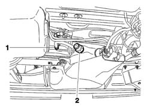
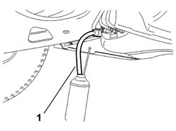
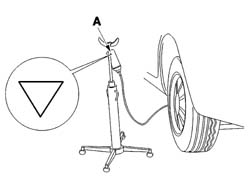

0010T16 F.A.P SYSTEM ATTITIVE FILL/TOP UP
- Path
- Procedures > 00 MAINTENANCE > 0010 NEW VEHICLES AND MAINTENANCE > 0010T VEHICLE FLUIDS > 0010T16 F.A.P SYSTEM ATTITIVE FILL/TOP UP
- Kind
- repair procedure (removal / refitting; the operation number is the code)
- Applies to
- engines: 2.0 16V JTD, 2.2 16V JTD; all production periods
- Interactive page
- https://sloeber94.github.io/elrnDB-fUlss/en/#/179006816
Applies to: engines: 2.0 16V JTD, 2.2 16V JTD; all production periods
- Position the vehicle on a lift.
- The refill kit consists of: a one litre container of the product, a one litre empty container (to be used in the case of overfilling), a filler pipe with a plug and connector, an overfill pipe, a product container support device.
1. Disconnect the additive reservoir air intake connector.
2. Remove the additive reservoir overfull plug.

Applies to: engines: 2.0 16V JTD, 2.2 16V JTD; all production periods
Connect the female connector for the product container to the air intake circuit on the additive reservoir.
1. Connect the collection container pipe to the reservoir overflow connector.

Applies to: engines: 2.0 16V JTD, 2.2 16V JTD; all production periods
1. Keeping the container full of additive supported higher than the reservoir, puncture the container at the point shown by the triangle.

Applies to: engines: 2.0 16V JTD, 2.2 16V JTD; all production periods
- When all the fluid has drained, disconnect the pipe from the reservoir.
- Repeat the operation until additive comes out of the overfull opening.
- Refit the overfull plug on the reservoir.
- Reconnect the additive reservoir air intake connector.
- Continue, using the EXAMINER, after having selected the specific function for reinitializing the engine management control unit depending on the information concerning the quantity of additive and check the state of the particle filter.
- Remove the vehicle from the lift.